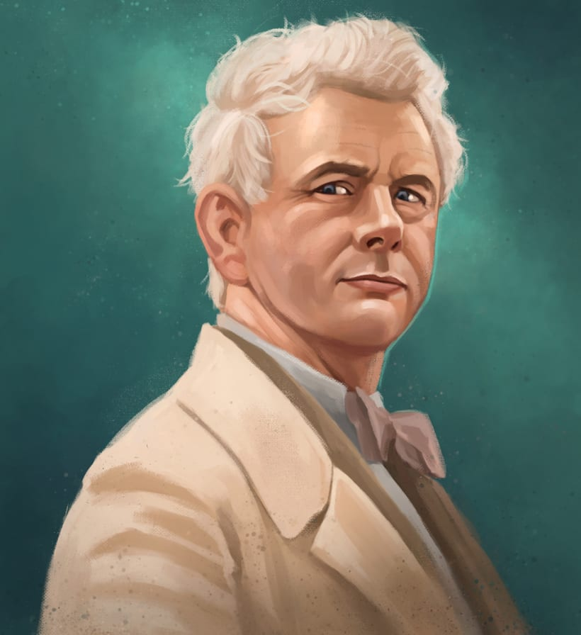

Aziraphale
disfruta de los humanos y le gusta su vida en la
Tierra. Hay restaurantes aquí, para empezar. Ade-
más, no encuentra atractiva la idea de escuchar
The Sound of Music por la eternidad. Es el
novio de Crowley, anteriormente mejor amigo.